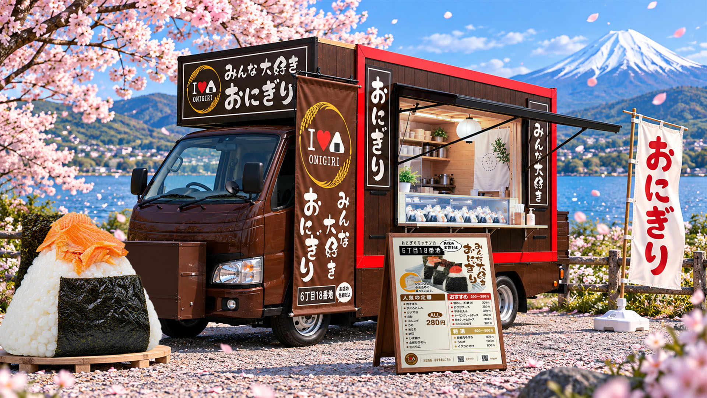
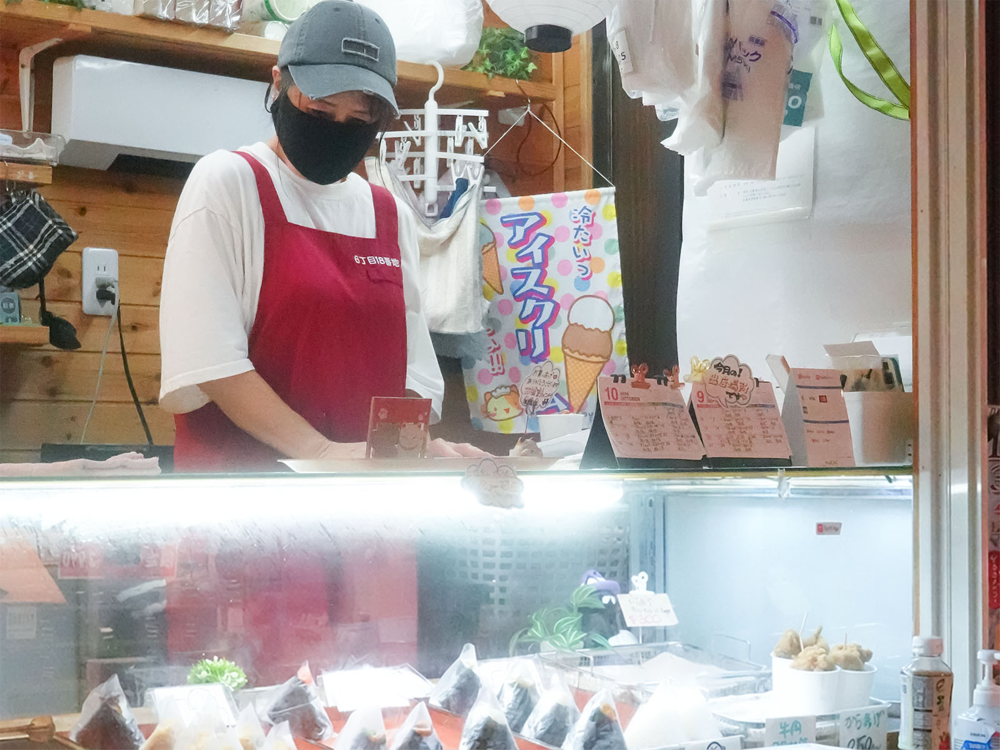
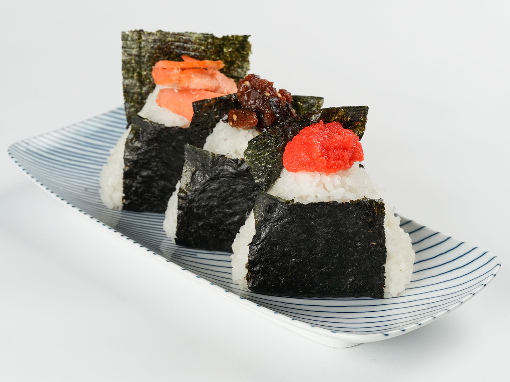

おにぎりキッチンカー「6丁目18番地」
みんな大好きおにぎり。
「6丁目18番地」は、病院や地域のイベントなどに出店する、おにぎりのキッチンカーです。食べ比べて選んだ長狭米と、香りを大切にした海苔。具材もいろいろそろえ、一つひとつの形や見栄えにも気を配っています。いつもの具材から、ちょっと贅沢な組み合わせまで、お好みのおにぎりを見つけてください。
メニューを見るお店について

憧れのキッチンカーでおにぎりを！
これまでいくつかの飲食店で経験を重ねるなかで、いつか自分のキッチンカーを持ちたいと思っていました。
子どもの手が離れ、自分の時間が増えたころ、夫から思いがけないプレゼントが。なんと、それは憧れていたキッチンカーでした！
こうして始まったお店の名前は「6丁目18番地」。6月18日の「おにぎり記念日」にちなんで名づけました。

お米のおいしさと、海苔の香りを大切に
お米は、いくつか試した中で一番おいしいと感じた、千葉県鴨川市の長狭米を選びました。
海苔は何よりも香りを大切にして選んでいます。その香りを楽しみに、毎週買いに来てくださるお客さまもいます。
手に取る前から「おいしそう」、手に取った瞬間には「まちがいない」。そんなおにぎりを目指しています。
お問合せ・SNS
商品のお問い合わせや出店のご依頼は、お電話でお気軽にどうぞ。メールでもお問い合わせいただけます。最新の出店情報はInstagramをご確認ください。
商品について聞きたい
出店を依頼したい